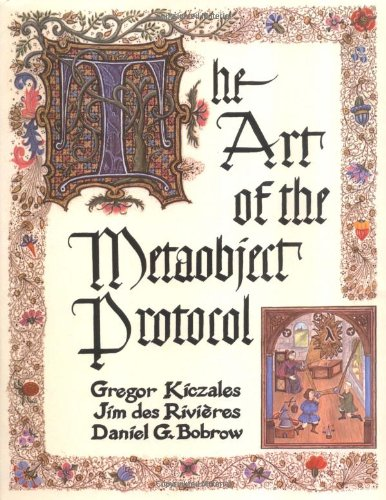

the art of meta object protocol

- Introspection
- Self-modification
- Intercession
Introspection
inspecting itself
// Base level
const obj = {
hello() {
console.log('Hello!');
}
};
// Meta level
for (const key of Object.keys(obj)) {
console.log(key);
}
Self-modification
modify the structure
function moveProperty(source, propertyName, target) {
target[propertyName] = source[propertyName];
delete source[propertyName];
}
> const obj1 = { prop: 'abc' };
> const obj2 = {};
> moveProperty(obj1, 'prop', obj2);
> obj1
{}
> obj2
{ prop: 'abc' }
Intercession
modify the semantics of some language operations
const target = {};
const handler = {
get(target, propKey, receiver) {
console.log(`GET ${propKey}`);
return 123;
}
};
const proxy = new Proxy(target, handler);
> proxy.foo
GET foo
123
Aspect oriented programming
the separation of cross-cutting concerns
aop
host code
const fLog = function(info){
return function(...args){
const result = info.getResult(this, args);
console.log(`param: ${args}, result: ${result}`)
return result;
};
};
class Cls {
constructor(a) {
this.a = a;
}
method(b) {
return this.a + b;
}
};
> aop('method', fLog, new Cls(1)).method(2);
param: 2, result: 3
3
aop
implementation code
function aop(pointcut, factory, target) {
return new Proxy(target, {
get: function(obj, prop) {
let value;
value = Reflect.get(obj, prop);
if (pointcut === prop) {
value = factory({
getResult:function(context, arg){
return obj[prop].apply(context, arg);
}
});
}
return value;
}
});
}
aop
implementation code 2
function aop(pointcut, factory, target){
var f = target[pointcut];
target[pointcut] = factory({
getResult:function(context, arg){
return f.apply(context, arg);
}
});
}